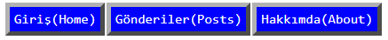

Herkese selamlar.
Bu GitHub Pages sayfasını genel olarak kendimi tanıtmak için oluşturdum. Bu ilk gönderim olacak ancak bunun hemen arkasından, şu an üzerinde uğraştığım Kut programlama dili ile ilgili ufak bir gönderi paylaşmayı düşünüyorum.
Normalde "devlog" vâri şeyler yapmayı pek sevmem. Günlük tutmayı da dürüst olmak gerekirse hiçbir zaman becerememişimdir. Bu kütüğün mevzubahis durum konusunda bana yardımcı olmasını bekliyorum açıkçası bir miktar. En azından programlama hayatımda yaşadığım gelişmeleri kaydedebileceğim bir yerin olması güzel bir deneyim olabilir. Aynı zamanda, olmaz ama, beni merak eden insanlar için de bir kaynak olabilmesi için bu sayfanın açık kaynak olması da işlevsel olacaktır.
Sitenin mevcut tasarımını kafamda yaklaşık 15 saniye içerisinde yaptım.
Yani 15 saniyede, tasarım ve estetik becerisi sıfıra yakın birisinin yapacağı bir tasarım için bence öyle rezalet falan durmuyor. Elbette ileride muhtemelen tasarım değişecektir, umarım da güzelleşecektir. Şimdilik ama bu sistem kötü değil bana kalırsa. Zaten site durağan (GitHub da kısıtlıyor bu konuda elbette) ve içerik odaklı olduğundan ötürü sofistike ve karmaşık tasarımlardan uzak durmanın da faydalı olacağını düşünüyorum.
Bu gönderiyle yeterince saçmaladığıma göre bu sayfanın kurulmasında bizzat etkisi olan sebeple ilgili olan gönderiye geçebilirim diye düşünüyorum.